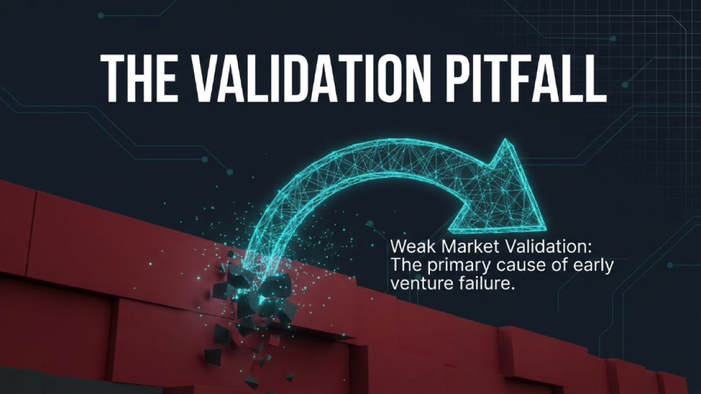
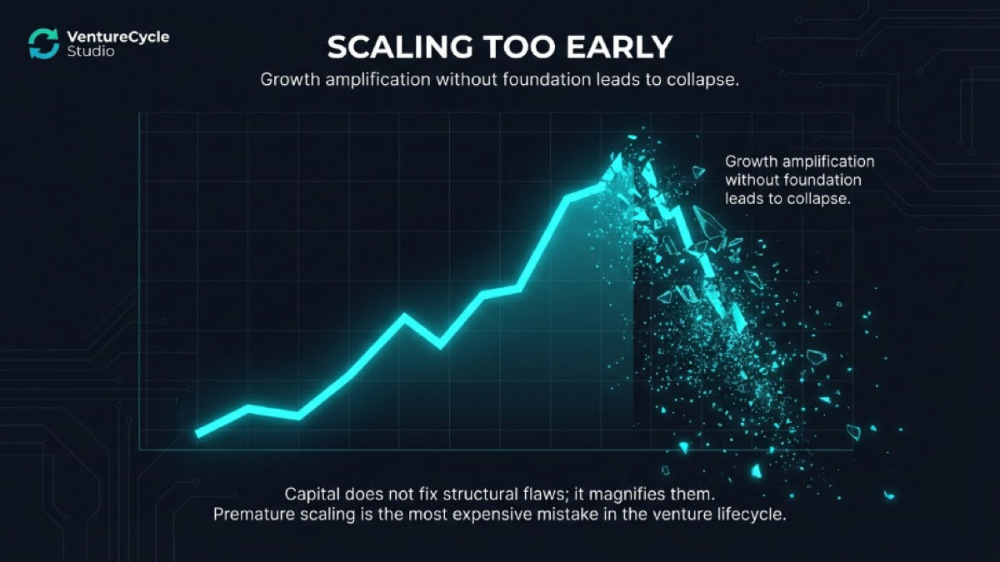
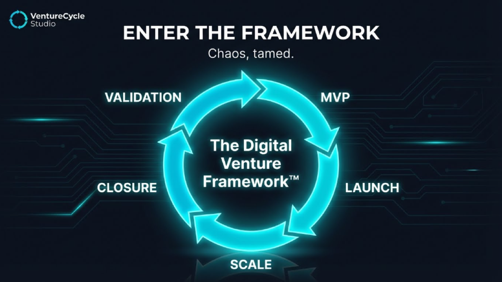
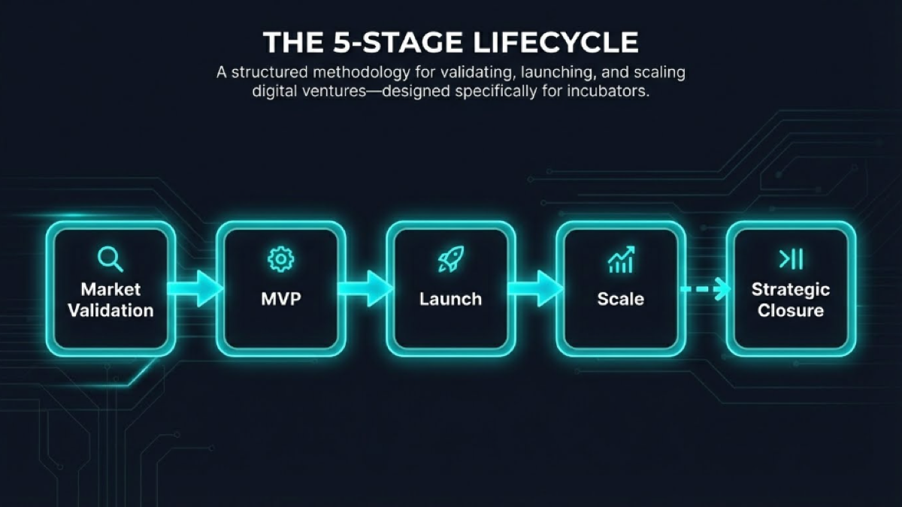
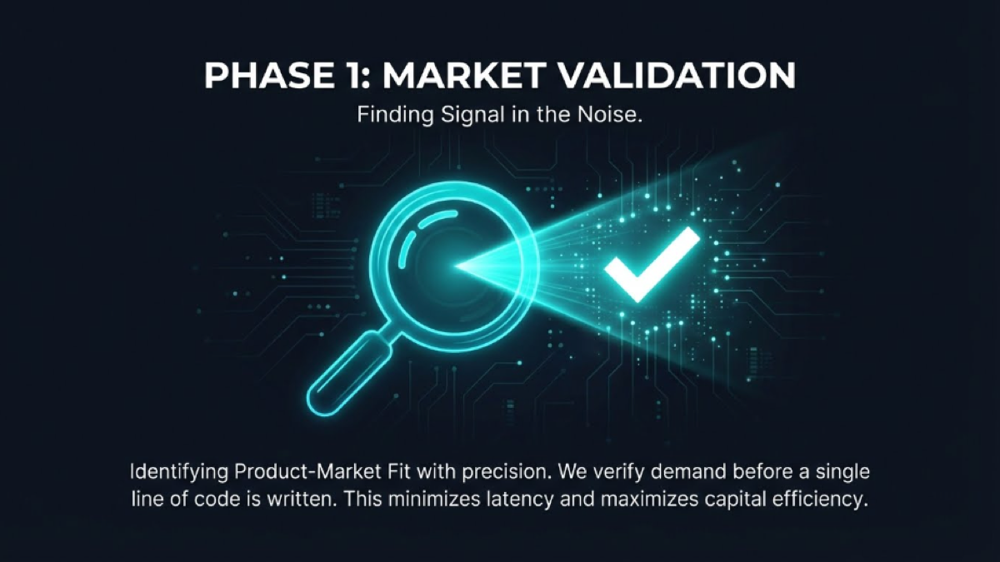
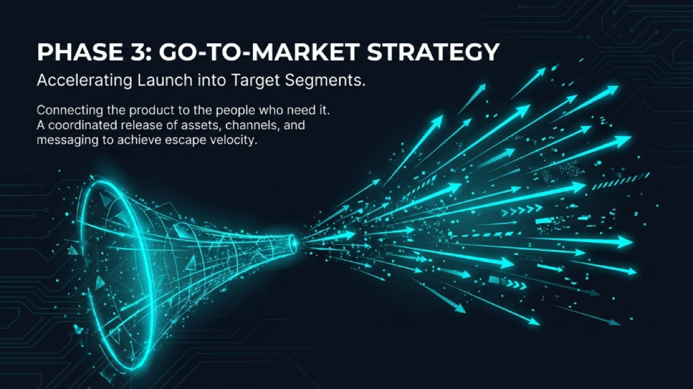
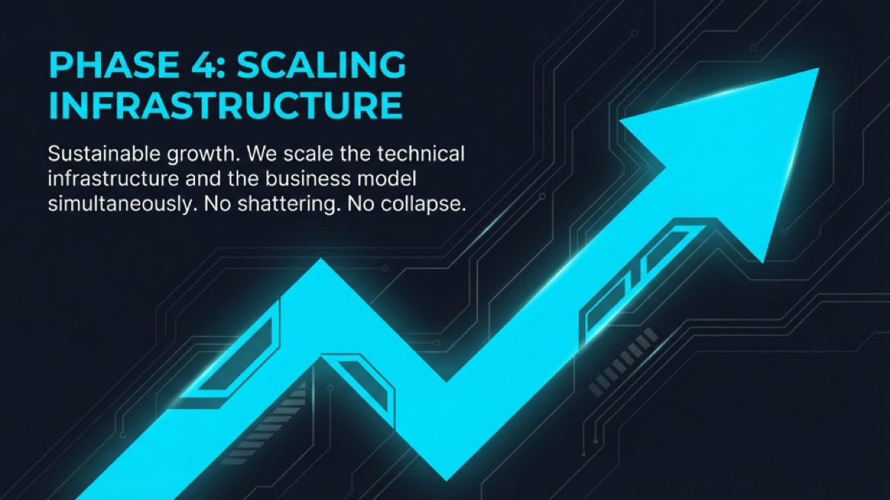

04 · التنفيذ المرئي
الـ brand book كامل












Studio Branding · Self-Build · 2026
الحلاق أقرع — بنيت brand identity الاستوديو نفسه بنفس الـ methodology اللي بطبقها على العملاء. الـ brand book كامل، الـ positioning واضح، الـ system جاهز.
01 · المشكلة
كنت بعمل brand identities للعملاء — positioning، visual system، brand voice — من غير ما يكون عندي ده لنفسي. الاستوديو كان شغّال لكن من غير هوية واضحة.
المشكلة التانية: الـ materials كانت موزعة — ملفات هنا، أفكار هناك، مش في نظام واحد. مشروع بدون structure = فرص ضايعة.
02 · التفكير
الخطأ الأول كان التفكير إن VentureCycle هو "AI creative studio". ده مش دقيق. ده venture builder بيستخدم AI كـ unfair advantage.
الفرق مهم: الـ creative studio بيسلّم deliverables. الـ venture builder بيبني أنظمة وبيمشي مع المشروع من الفكرة للتنفيذ للإغلاق. الـ model: Idea → MVP → Strategic Closure.
من هنا اتحدد كل حاجة: الـ tone (confident، methodical، dark)، الـ visual identity (أسود + ذهبي)، والـ positioning في السوق.
03 · النظام والأدوات
04 · التنفيذ المرئي







05 · النتيجة
VentureCycle دلوقتي عنده brand identity جاهزة للاستخدام في كل context — client proposals، LinkedIn، presentations، case studies زي ده.
الأهم: الـ positioning بقى واضح. لما حد بيسألني "بتعمل إيه؟" — عندي إجابة محددة مش "بشتغل AI وبعمل حاجات".
05.5 · القيمة للعميل
قبل المشروع: استوديو بيشتغل بدون هوية موحدة — كل proposal بيبان مختلف عن التاني. بعد المشروع: كل نقطة تواصل مع العميل بتحكي نفس القصة — الموقع، الـ case studies، الـ emails، الـ proposals.
الـ brand مش تجميل — ده أداة بيع. عميل بيشوف brand متماسك بيثق أكتر وبيتردد أقل.
06 · ما بعده
الـ brand book ده بقى الـ foundation لكل حاجة — الموقع الإلكتروني، الـ case studies دي نفسها، وأي client proposal جديد. مش بنعمل brand book كل مرة — بنستخدمه.
الخطوة الجاية: بناء Lovable.dev site للاستوديو يعكس نفس الـ visual identity بالكامل.